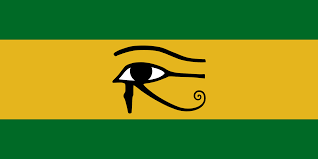

Tadhg's Project on Ancient Egypt

1. Ancient Egypt was located along the River Nile in northeast Africa.
2. The Egyptians invented the 365-day a year calendar.
3. Egyptian men and woman wore makeup.
4. Kids who were not royal or rich were educated by their fathers.
5. Only scribes could read and write and they were considered powerful people.
6. The Ancient Egyptian Empire began to weaken in about 700 BC.
7. The oldest dress was from Egypt.
8. The most popular sport in Egypt is football.
9. There were over 2,000 gods and godesses in ancient Egypt.
10. Animals were chosen to represent the powers of the gods.
Sources:
ducksters.com